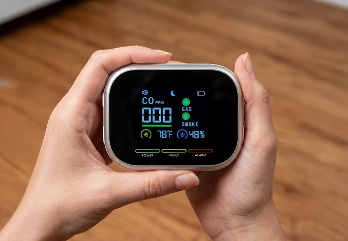
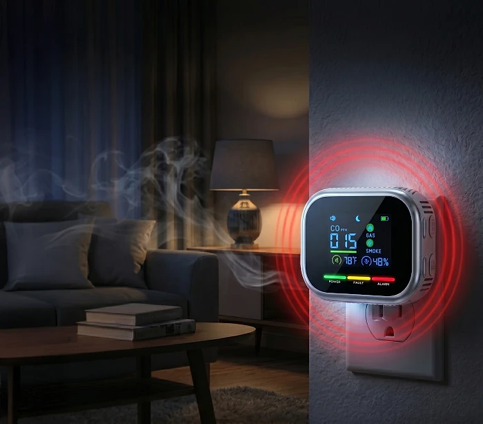

What Is CarbonOne Safe And How Does It Work?
CarbonOne Safe is a plug-in home detector sold online by the Onninest store. According to the official website, it offers "4-in-1" protection by monitoring carbon monoxide (CO), natural gas, propane and smoke from fire in one device, with a live digital display and an alarm that sounds when a danger is detected.
The unit is a small square box with a color screen that plugs straight into a standard wall outlet. The screen shows the carbon monoxide level in parts per million (ppm), gas and smoke indicators, room temperature and humidity, plus power, fault and alarm lights. The seller says it has a battery backup for power outages, runs automatic self-tests and has a rated lifespan of five years.
The sales page explains that many standard CO alarms do not sound until levels reach about 70 ppm, while CarbonOne Safe displays readings from 0 ppm so you can see a level rising. It also says the device uses "certified electrochemical sensor technology". It does not say who certified the sensor, and it does not mention a UL listing or any other safety standard for the finished alarm.
This matters. In the United States, home CO alarms are normally listed to UL 2034, smoke alarms to UL 217 and gas alarms to UL 1484, and building codes in many states require listed alarms. Without a stated listing, buyers cannot tell how CarbonOne Safe was tested.
There is also a contradiction on the seller's own page: the features list four dangers including smoke, but the FAQ says the device detects carbon monoxide, natural gas and propane, "all three". A live CO reading can be a useful extra, but it should be added to code-required alarms, never used in place of them.
CarbonOne Safe Features
According to the official website, CarbonOne Safe offers:
4-in-1 monitoring: carbon monoxide, natural gas, propane and smoke from fire.
Live digital display: CO in ppm, plus temperature and humidity.
Instant alarm: sounds when CO, gas or smoke is detected.
Plug-in setup: standard outlet, no tools or wiring.
Battery backup: keeps working during power outages.
Self-testing and 5-year rated lifespan.
The website does not list the alarm thresholds for each gas, the alarm volume in decibels, the type of smoke sensor, the battery type and how long it lasts, any third-party certification or a model number. It also does not say whether units can be interconnected so that one alarm sounds throughout the house. Ask customer service for these details in writing before you rely on the device.
The product photos show a white or silver frame around a black screen, with the CO reading in large blue digits, small green gas and smoke icons, a battery symbol and three colored status bars marked power, fault and alarm. One image shows the unit plugged directly into a wall outlet, and another shows it held in the hand, which suggests it may also stand on a shelf on battery power. The website does not confirm whether that is a supported way to use it.
CarbonOne Safe How To Use
According to the official website, setup takes about five seconds: plug the unit into a standard wall outlet and the screen turns on. The seller suggests placing units near gas appliances such as a furnace, water heater or stove and in hallways outside bedrooms, and says most homes need two to four units, starting with one per floor.
Placement deserves more thought than the sales page gives it. Smoke and natural gas rise, so smoke alarms and natural gas alarms are normally mounted high on a wall or ceiling, while propane is heavier than air and is detected closer to the floor. A device sitting in an outlet near the floor is not in the usual position for detecting smoke or natural gas. Follow the manual and the placement rules of your local fire code.
Keep your existing listed smoke and CO alarms in place and test them monthly. If any CO alarm sounds, get everyone outside into fresh air at once and call 911 or the fire department. If you smell gas, leave the house without switching lights or appliances on or off, and call your gas utility or 911 from outside.
Have fuel-burning appliances, chimneys and vents inspected every year by a qualified technician, since detectors warn about a problem but do not prevent it.
CarbonOne Safe – Refund Policy
According to the official order page, CarbonOne Safe comes with a 90-day money-back guarantee. The seller says that if you do not feel safer with the device in your home within 90 days, it will refund your purchase, "no questions asked".
The store's general terms of service refer to a separate return policy and state that online-only products can be returned or exchanged only according to that policy. The sales page does not explain whether shipping is refunded, who pays for return postage or whether the device must be unused, so ask customer service before you buy.
The store operates under the name Onninest, and customer service can be reached by email at cs@onninest.com. The sales page says orders are dispatched within 48 business hours with delivery in two to three days, while the store's shipping terms mention three to seven business days after shipment. Allow for the longer estimate.
Keep your order confirmation, order number and the original packaging until you are sure you want to keep the units. If you return them, ask for written return instructions and the return address, ship with tracking and keep the receipt until the refund appears on your statement. Save a screenshot of the guarantee on the order page on the day you buy.
CarbonOne Safe Customer Reviews
-
Jessica C.Verified Purchase
"Plugged it in and it was up and running. Love that you can actually see the numbers on the screen. Our old one just had a green light. Highly recommend."
-
Mark T.Verified Purchase
"Does what it says. Easy to set up and the display is clear. Glad I finally got one of these."
-
Carol B.Verified Purchase
"She's older and lives alone. Wanted something easy for her to use. She had it set up herself in under a minute. Simple and gives us both peace of mind."
CarbonOne Safe – Where To Buy
CarbonOne Safe is sold through the official Onninest website at onninest.com, which hosts the product page and the checkout. The offer is aimed at customers in the United States, and the seller says orders ship from a U.S. warehouse.
Plug-in detectors with almost the same square design and color display are sold under many brand names on large marketplaces. A look-alike may use different sensors, and the 90-day guarantee from the official seller will not apply to it. Whatever you buy, check the packaging for a UL or other recognized safety listing.
The sales page relies on urgency, such as countdown timers, "stock levels low" notices and a "ship by" date, and shows two different review totals, "17,127+" and "trusted by 151,637+ American families". The same store sells other products, such as the Vermix Pulse Pro repeller. Take your time, check the order summary, the number of units and the refund terms, and make sure you are on the onninest.com domain.
To ensure you’re getting the authentic product, most users choose to visit the official website.
Is CarbonOne Safe A Scam?
Based on the information available, there is no sign that CarbonOne Safe is a scam in the sense of a store that takes orders and ships nothing. It is sold through a branded online store with terms of service, a shipping policy, a 90-day money-back guarantee and a customer service email.
On the plus side, a live CO reading in ppm is genuinely more informative than a single green light, the unit is easy to plug in, and the battery backup and self-test are sensible features.
There are, however, serious points to weigh for a life-safety device. The website names no UL 2034, UL 217 or UL 1484 listing, no testing lab and no model number. The "certified" sensor claim does not say who certified it. The page says "4-in-1" with smoke, while its own FAQ lists only three gases, and an outlet-level location is not where smoke or natural gas alarms are normally placed. No street address for the company is published.
Do not remove your listed alarms.
If you see CarbonOne Safe as an extra CO display next to code-compliant smoke and CO alarms, ordering from the official website with the 90-day guarantee is a reasonable test. It should not be the only alarm protecting your home.
For those who want to verify product details or check current availability, the official CarbonOne Safe website remains the safest option.
